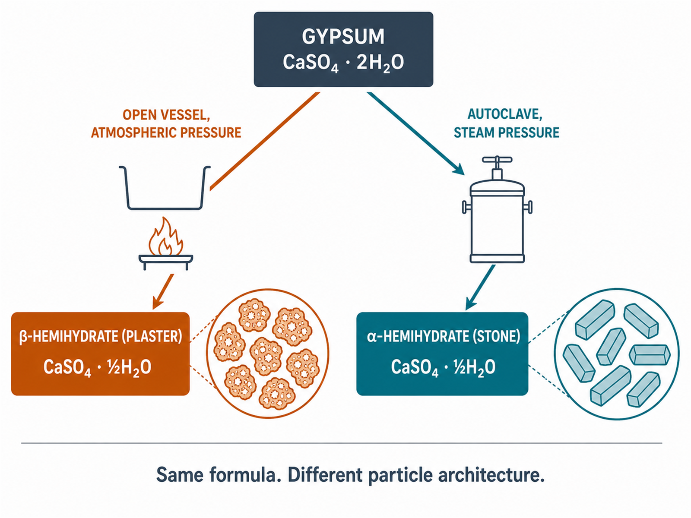
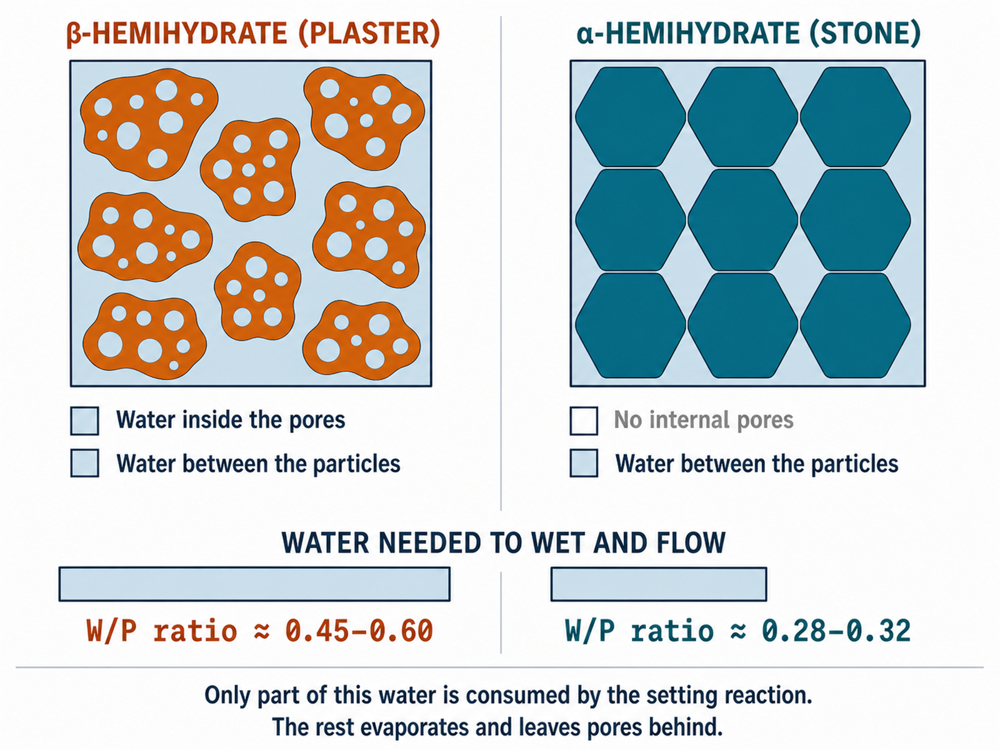
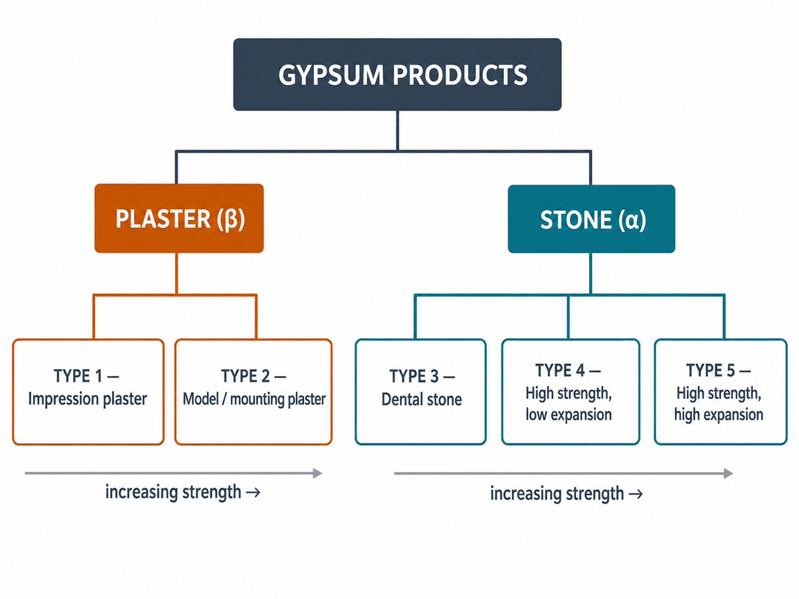
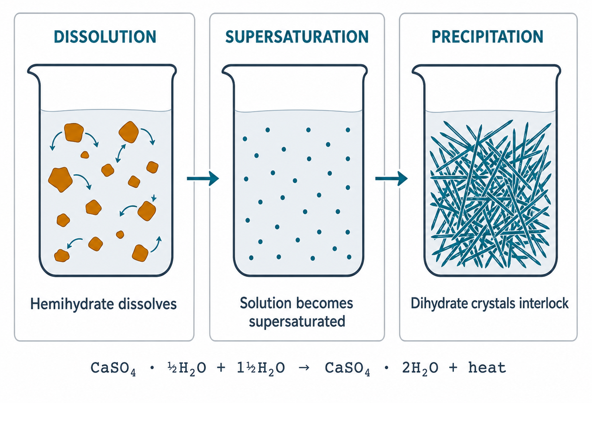
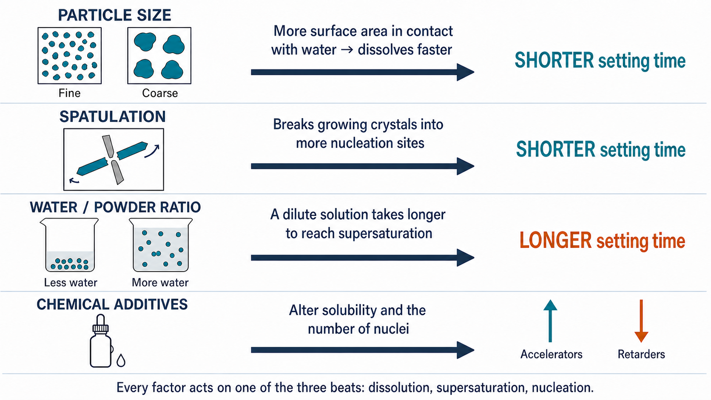
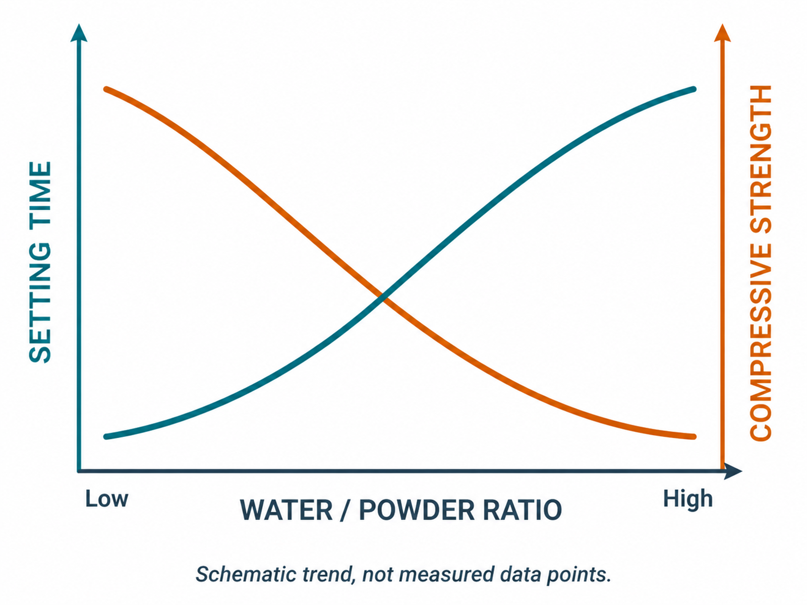
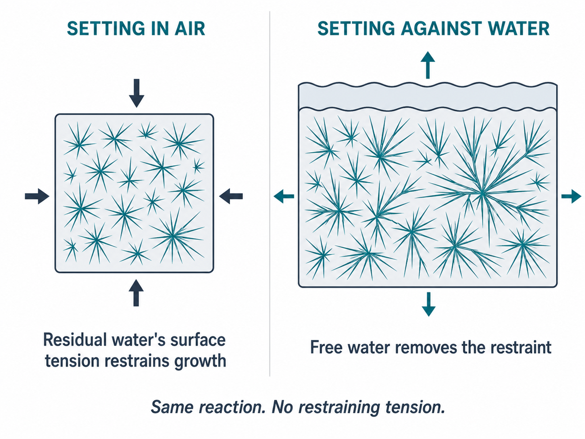
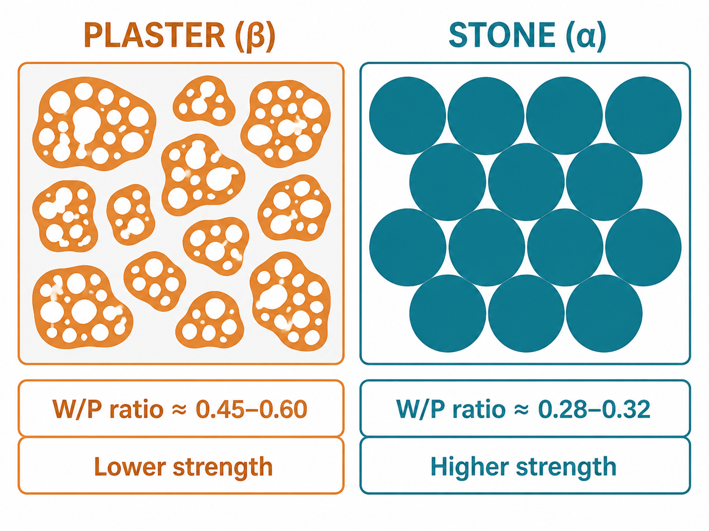

Phase 2 · Clinical materials · Lecture 09
The material that turns a fluid impression into a rigid, dimensionally stable replica of the mouth.
Learning objectives
Composition
Clinical uses
Manufacture

FIG 09.1 Open-vessel calcination yields porous β-hemihydrate; autoclaving under steam pressure yields dense α-hemihydrate.
Structure → property
Ranges reported across dental-materials textbooks (Van Noort ch. 3.1; Anusavice); exact values are manufacturer-specific and fall outside ISO 6873.

FIG 09.2 In β, water sits both inside the pores and between the particles; in α, only between them.
Classification
| Type | ISO 6873 designation | Hemihydrate |
|---|---|---|
| 1 | Dental plaster for impressions | β |
| 2 | Dental plaster for mounting (Class 1) or models (Class 2) | β |
| 3 | Dental stone for models | α |
| 4 | Dental stone, high strength, low expansion | α |
| 5 | Dental stone, high strength, high expansion | α |
ISO 6873:2013, clause 4.

FIG 09.3 The five ISO 6873 types, grouped by plaster vs stone.
Mechanism
Hemihydrate powder dissolves into the mixing water — it is markedly more soluble than the dihydrate it will become.
As more hemihydrate dissolves, the solution becomes supersaturated with calcium sulphate relative to the much lower solubility of the dihydrate.
Dihydrate crystallises out of the supersaturated solution: needle-like crystals nucleate, grow, and interlock into a rigid mass.

FIG 09.4 Dissolution → supersaturation → interlocking dihydrate crystals.
Controlling the set
Van Noort, ch. 3.1.
Mechanism
Each one changes the rate of a step already met in Part 3.

FIG 09.5 Each factor changes the rate of one step, and the setting time follows.
The master variable
Trend reported for Type III/IV gypsum, e.g. Alsadi et al., “Influence of Water Type and Water/Powder Ratio on the Strength and Hardness of Type III and IV Gypsum”, BJSTR.

FIG 09.6 As the water/powder ratio rises, setting time lengthens and compressive strength falls.
Setting expansion
ISO 6873:2013, clause 5.4; mechanism: Van Noort, ch. 3.1.
A larger effect

FIG 09.7 In air, residual water’s surface tension restrains crystal growth; free water on the surface removes that restraint.
Clinical significance
The numbers
| Type | 2 h | 24 h |
|---|---|---|
| 1 | 0.00–0.15% | — |
| 2 (Class 1) | 0.00–0.05% | — |
| 2 (Class 2) | 0.06–0.30% | — |
| 3 | 0.00–0.20% | — |
| 4 | 0.00–0.15% | 0.00–0.18% |
| 5 | 0.16–0.30% | — |
ISO 6873:2013, Table 1. Type 2 Class 1 = mounting plaster, Class 2 = model plaster (slide 9). Type 4 is the only type also measured at 24 h, added in the 2013 edition because CAD/CAM die stone must not keep expanding well past the 2 h point.
Strength
| Type | Compressive strength, wet, 1 h (MPa) |
|---|---|
| 1 | 4.0–8.0 |
| 2 | ≥ 9.0 |
| 3 | ≥ 20.0 |
| 4 / 5 | ≥ 35.0 |
ISO 6873:2013, Table 1. Wet/dry ratio: Van Noort, ch. 3.1.
What controls it
Synthesis

FIG 09.8 Particle morphology explains the water demand and strength gap between plaster and stone.
Clinical selection
| Type | Typical use | Why |
|---|---|---|
| 2 — model plaster | Study casts, mounting casts on an articulator | Adequate accuracy, low cost, easy to trim |
| 3 — dental stone | The master cast — the main working replica the crown or bridge is built on | Stronger and more abrasion-resistant than plaster, still economical |
| 4 — die stone | The die cut from the master cast for one prepared tooth | High strength and low expansion protect this thin, unsupported piece while it is trimmed and while the crown is waxed onto it |
| 5 — high-expansion die stone | Dies where extra expansion compensates the metal alloy’s own shrinkage as it cools after casting | Same strength as Type 4, expansion tuned to the technique |
Type 1 (impression plaster) is largely historical — elastomers and hydrocolloids (Lecture 08) replaced it for most impressions.
Take-home
Click any slide · press O to toggle · Esc to close